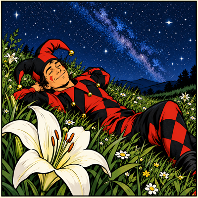

~~ VII ~~
- Hablas muy rápido y me pones muy nervioso. No por decir más cosas se es más inteligente. Pero tú no me dejas nunca decir ninguna cosa. Yo también pudo decir muchas cosas que suenen muy inteligentes, como haces tú, y decir cosas que les guste escuchar a los demás, como haces tú.
- Ya lo sé.
- Pero siempre estás hablando muy rápido por la mañana y por la tarde también y, cuando por las noches ya no dices nada, pienso que te has enfadado conmigo por escucharte en silencio.
- No me enfado. Simplemente duermo.
- Seguro que ya no sueñas conmigo. ¿Has soñado alguna vez conmigo? Yo he soñado muchas veces contigo. Hay días en los que creo que sólo sé soñar contigo porque no sueño con nada más. Una vez me parece que soñé con un saltimbanqui; pero ya no lo recuerdo. Vestía de verde y de azul, pero me parece que tenía un sombrero amarillo. ¿Te acuerdas de él?
- Una vez soñé en blanco.
- Cuando, esta noche, me ponga a soñar, lo haré muy rápido. Así cuando me despierte, si no recuerdo el sueño, sabré que es porque no me ha dado tiempo de verlo bien porque ha pasado muy rápido. Si no duermes lo suficiente después tendrás sueño durante el día. Por eso soy más alto que tú.
- De día veo visiones.
- Eso te pasa porque de noche no hay luz. Si quisieses podrías hablar con las luciérnagas. Me parece que saben francés, o italiano. Yo no sé. Por eso les hago dibujos a lapicero.
Fin.